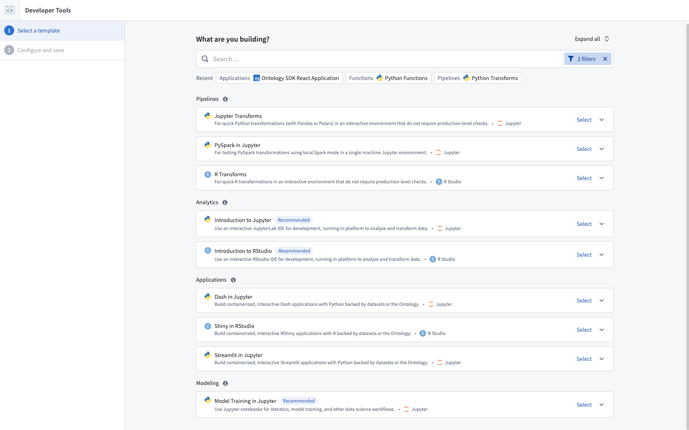
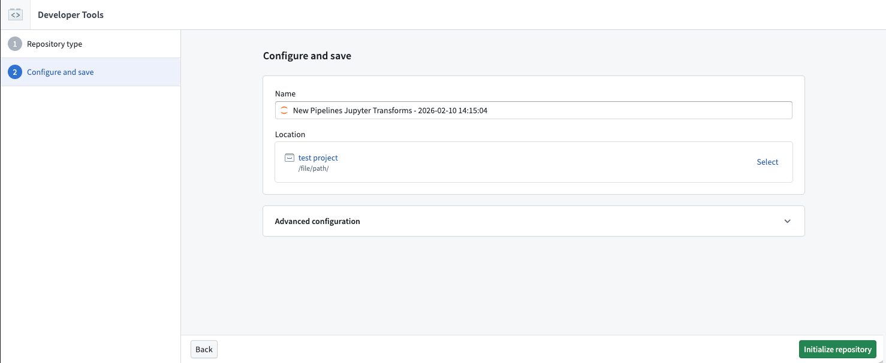
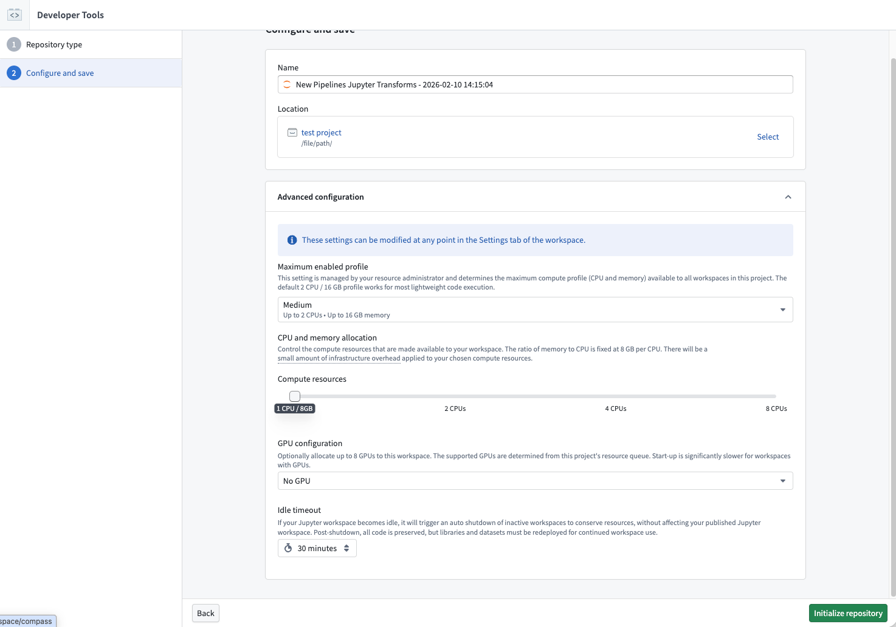
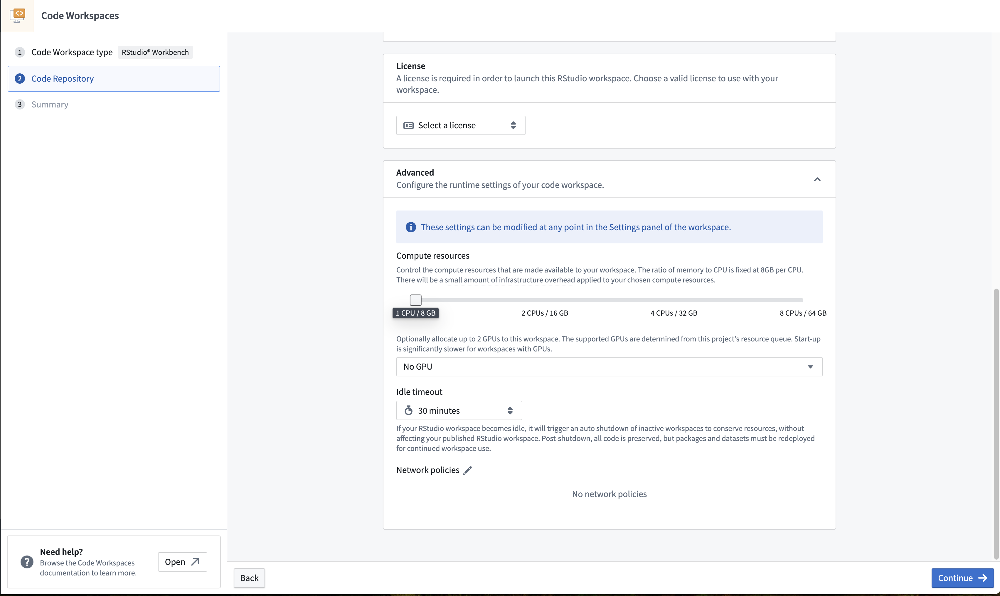
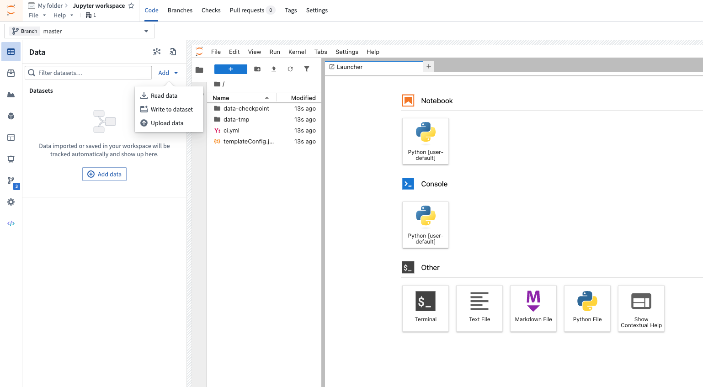
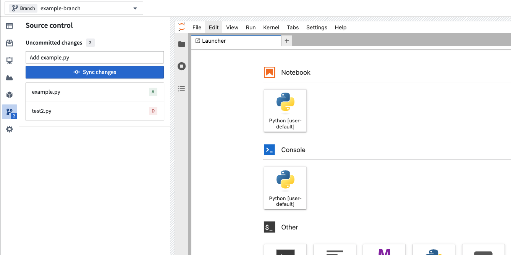
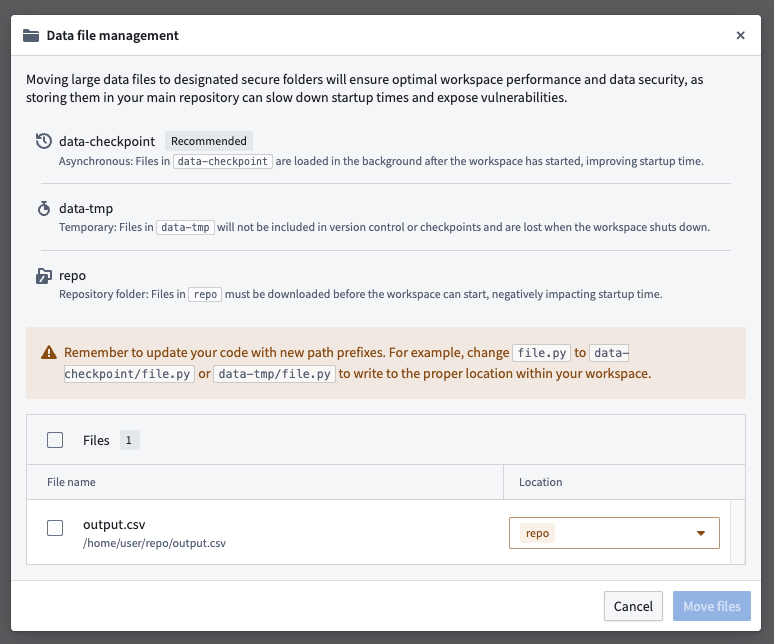

This tutorial provides an introduction to Code Workspaces by setting up a workspace for either JupyterLab® or RStudio® Workbench.
All code workspaces are backed by a Palantir platform code repository. This enables code workspaces to have industry-standard version control features like branching, merging, and commit history, allowing other users to view the code and safely operate in the same workspace.
:::callout{theme="warning"} Previously, code workspaces and associated code repositories were represented by separate resources. Now, code workspaces and associated code repositories are represented by a single resource; the code repository. Selecting the code repository from any folder in Foundry will automatically open the associated Jupyter or RStudio® workspace.
This change applies to new code workspaces, and does not affect existing code workspaces and code repositories, which will continue to be separate resources.. :::
To launch a code workspace, open the Code Workspaces application and navigate to the General tab. Then, select a folder in which to create your code workspace.
:::callout{theme="neutral"}
Users with Editor or Owner roles on the project will be able to modify the settings of the code workspace. Users with Viewer roles on the project will be able to launch the workspace. You can select your home folder as a location, but this may cause your code workspace and data to be restricted to a project.
:::
Choose the type of workspace to launch. Currently, the supported workspaces are JupyterLab and RStudio® Workbench.


Then, set the name and location of the backing code repository for the workspace you want to create. If you are creating an RStudio® workspace, you will be able to select a license. In most cases, the license will be automatically selected.

Each user who launches the workspace will run their own isolated session. If two or more users will be using the same workspace, ensure that all users have Viewer permission or higher for the underlying code repository. See above for more information about a code workspaceâs underlying code repository.
Advanced settings allow you to define idle time and the resource profile for your code workspace. These settings can be modified at any time in the Settings panel of the workspace accessible by selecting the gear icon in the top right corner.

:::callout{theme="neutral"} Users cannot publish transforms directly in an underlying code repository, since the repository is customized for use as infrastructure for Code Workspaces. All code must be published from the code workspace. :::
You can import data from sources in Foundry directly by navigating to the Data tab and then selecting Add > Read data. This includes Foundry datasets, Iceberg tables, and virtual tables. Any data that is imported from outside the code workspaceâs current project (including the userâs home folder) will require a reference to be added.
Alternatively, for data that has not yet been ingested into Foundry, select Upload data to import data directly from your device.

:::callout{theme="warning"} Dataset views cannot be used as imported datasets in a code workspace. Instead, copy the dataset view to a new or existing dataset where necessary. :::
You can import packages into your code workspace by navigating to the Packages tab in the left panel, or you can install packages directly using Conda or PyPI for Jupyter® and CRAN for RStudio®.
JupyterLab® workspaces support installation of packages from Conda or PyPI. By default, Code Workspaces exposes conda-forge and pypi.org. You can add other channels to a code workspace by adding them to the backing code repository and restarting your code workspace.
Conda/PyPI environments in JupyterLab® can be consistently restored across workflows in JupyterLab®, applications, or transforms using managed environments.
You can browse packages from the Packages tab and select the package you wish to install. This will automatically execute an installation command for you in a new JupyterLab® terminal.
To install packages manually, you can use maestro env conda install <packages> for Conda packages and maestro env pip install <packages> for PyPI packages in the JupyterLab® terminal.
Review managed Conda/PyPI environments in Jupyter® Notebooks for more information.
:::callout{theme="warning"}
Installing packages directly with mamba and pip is now deprecated.
:::
RStudio® Workspaces support installation of packages from CRAN, Posit⢠Package Manager, or Bioconductor. By default, Code Workspaces exposes all of Posit⢠Public Package Manager â as well as Bioconductor â. You can add other channels (such as MRAN) by adding them to the backing code repository and restarting your code workspace.
To install packages, you can use renv since renv supports authenticated CRAN channels.
You can browse packages from the Packages tab and select the package you wish to install. This will generate an installation command for you to copy-paste in RStudio® Workbench and execute. Generally, CRAN packages are installed with renv::install("<package>") and Bioconductor packages with renv::install("bioc::<package>").
In order for other users of the same workspace to view your code, you must publish your code to the branch you are working on.
Note that publishing your code will cause CI checks to run, which will publish a new version of every registered Code Workspace application. As a best practice, we recommend keeping code workspaces focused on a single type of task (such as building an application, analyzing data, writing data transformations, or building models), rather than attempting to accomplish multiple independent workflows in a single code workspace.
Unpublished changes can be viewed in the Source control side panel. Optionally supply a commit message and then select Sync changes to publish your code. When collapsed, the number of file changes is displayed over the source control icon.

You can branch your code workspace, check out branches, and perform other version control activities with the branch manager.
To create or find a branch, use the branch selector at the top of the screen. Selecting the branch selector opens a menu displaying the list of existing branches. Alternatively, a new branch can be created by selecting Create new branch. If you have unpublished code changes, you will be prompted to sync before checking out the selected branch.

In the same way as branching elsewhere in Foundry, the data available in a code workspace comes from the branch you are currently on (with fallbacks). If you write data to an output dataset, the data will be written to your current branch.
You can merge your branch into master by selecting Propose changes. After proposing changes, a pull request (PR) preview will appear.
You can share your code workspace by selecting Share in the upper-right corner of the interface.
:::callout{theme="warning"} If the code workspace and code repository are separate resources, you must also share the permissions on the underlying repository for others to see the code in your workspace. :::
Users with Editor or Owner roles on the project will be able to modify the settings of the code workspace. Users with Viewer roles on the project will be able to launch the workspace.

You can manually restart a code workspace (for instance, to pick up configuration changes) by selecting Active > Restart workspace in the upper-right corner of the interface.

This will result in a new session in the initial state. The workspace will automatically restart with all the changes that were committed to the backing code repository. However, the workspace will not contain everything from the state present before the restart, including imported data, variables stored in memory, installed packages, and more.
Before restarting a workspace, the application will automatically create a checkpoint and prompt you to sync your latest changes.
You can select Active > Restore checkpoint to restore the workspace to the state of a previous checkpoint. See the checkpoints section below for more information. Code Workspaces will not automatically restore the workspace to a previous checkpoint following a workspace restart.
Users who open Code Workspaces for the first time will receive a blank workspace with the backing repository cloned in /home/user/repo.
Code Workspaces sessions are automatically shut down when there is no user activity, and can last at most 24 hours (see more about automatic shutdowns in the advanced settings documentation).
When a session shuts down, all the relevant state is persisted in Foundry in a checkpoint and restored the next time the same user opens the code workspace. This allows users to pick up where they were at the time of shutdown.
Code Workspaces has two distinct ways to save existing work: manual code syncing and automated checkpointing.
:::callout{theme="neutral"} We recommend relying on code synced to the underlying code repository (with the required package installations as part of the code) rather than relying on workspace checkpoints. Code syncing will help ensure a resilient workflow and facilitate collaboration with other users who may not have access to a given checkpoint. :::
Code syncing is a manual action and the recommended way to save existing work in a code workspace. Syncing code means committing your files to the backing code repository of the workspace. Any work saved through code syncing is permanently saved in the repository, and everything in the /home/user/repo folder is stored as part of that sync. Code syncing does not save existing states such as variable contents, installed packages on the environment, data, or code cell outputs. The sync history of the workspace can be consulted through the backing code repository of the workspace. We generally recommend to frequently sync your code to both maintain a history of changes and ensure all relevant work is properly and permanently stored.
To save all of your existing changes in a workspace, select Sync changes in the top right corner of the workspace. Once that succeeds, the changes are committed to the backing repository of the workspace, which you can access by selecting the gear icon in the top right corner then choosing Open code repository.
Checkpointing is a feature that automatically takes snapshots of the existing state of a workspace to be able to restore it across sessions. There are two types of checkpoints: data checkpoints and code checkpoints.
Unlike code syncs that only store committed files, data checkpoints store all contents of /home/user/repo (including uncommitted code changes), /home/user/libs (including installed packages), /home/user/envs (Conda environments), and /home/user/data (extra data downloaded by the user). In the case of RStudio®, variables stored in memory are stored in /home/user/repo/.RData.
:::callout{theme="neutral"} Restricted outputs mode disables data checkpoints. Code checkpoints continue to function in restricted outputs mode. :::
By default, Code Workspaces saves a data checkpoint of a given user's session every ten minutes. Data checkpoints are not shared across users. Code Workspaces also creates a data checkpoint before the workspace shuts down (through a manual restart, a manual shutdown, or an automatic shutdown, for example). An inactive code workspace does not generate any new data checkpoints, and any given data checkpoint lasts up to a maximum of 30 days. As a result, since no valid data checkpoints will be available, a workspace left untouched for more than 30 days will only be able to restore work from what was synced to the backing repository or from a code checkpoint. Data checkpoints are designed to be a safety net to persist the workspaces's state across sessions; they should not be relied on as a primary form of saving. We strongly recommend frequently syncing existing work in the workspace.
Restoring a data checkpoint will restart the workspace and restore the home folder to how it was at the time the checkpoint was created.
Code checkpoints store only the workspace code (not data) by saving the contents of /home/user/repo (including uncommitted code changes) while excluding files that are either above a certain size or have extensions commonly associated with data. This filtering is done on a best-effort basis. Code checkpoints are created only before the workspace is shut down. Unlike data checkpoints, there is no retention period for code checkpoints.
Code checkpoints are not subject to filtering that would prevent you from committing common data files to your workspace's backing repository. You must ensure that code files do not contain data. For example, a .py code file should never contain tabular data that exists in a Foundry dataset.
Code Workspaces automatically scans your /home/user/repo/ folder for files with large sizes or common data file extensions, such as .csv, .gz, .parquet, .pdf, or .xlsx. Moving these files to either the data-checkpoint or data-tmp directory optimizes workspace startup times and improves security, acting as a safeguard in case you or another user unintentionally commit these files to the workspace's backing repository.
data-checkpoint: The recommended place to store data files that you want to save and restore across sessions. These files will be saved to checkpoints and restored in the background without blocking workspace startup. Additionally, this folder will be excluded from syncs to prevent committing large, unsecured data to the backing code repository.data-tmp: The recommended place to store temporary files that you do not want to save across sessions. These files will not be saved to checkpoints or the backing code repository; they will instead be discarded when your workspace shuts down.If you want data to be available to published dashboards or transforms, or to other users, we recommend that you persist data to a Foundry dataset instead of saving it in your workspace.
When the workspace detects data files, you will see a warning that prompts you to move them to either the data-checkpoint or data-tmp directory. Select the files you want to relocate and follow the dialog to move them. Remember to update your code with the new path prefixes, or else the warning will appear again as soon as you write a new data file in the /home/user/repo/ folder.

RStudio® and Shiny® are trademarks of Positâ¢.
Jupyter®, JupyterLab®, and the Jupyter® logos are trademarks or registered trademarks of NumFOCUS.
All third-party trademarks (including logos and icons) referenced remain the property of their respective owners. No affiliation or endorsement is implied.